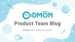
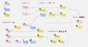
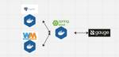

コドモン Product Team Blog
https://tech.codmon.com/
株式会社コドモンの開発チームで運営しているブログです。エンジニアやPdMメンバーが、プロダクトや技術やチームについて発信します！
フィード

4年間で変わったPdMの役割と、これからのコドモンPdM🚀
コドモン Product Team Blog
こんにちは！プロダクト開発部PdMの天川です。 5月で入社から丸4年を迎え、現在のPdMメンバーでは社歴が長い方になりました。 この記事では、私が4年間で経験してきたPdMの役割の変化と、これからコドモンのPdMが求められるだろう役割についてお話しします。 1月に伊勢神宮へ行きました。あんこは苦手だけど赤福は好き なぜ、私はコドモンを選んだのか コドモンに入社する前、私はヘルステック企業でエンジニアとして働いていました。 転職したきっかけは、コドモンのエンジニアリングマネージャーからの声掛けです。 保育業界にはまったく詳しくありませんでしたが、前職で循環器系疾患（糖尿病など）の再発防止に関わっ…
1日前

ClineとDDDと私 233
233
コドモン Product Team Blog
こんにちは、プロダクト開発部の中田です。 最近、AIエージェント界隈は非常に盛り上がっていますね。 今回は、Clineを使ってみた感想や、自分が現在どのように使っているかをご紹介します。 はじめに Clineを使いはじめたわけ Clineを使いはじめて悩んだこと AIを使用するうえでの保守性の高いコードベースの重要性 コンテキストの局所化 自然言語としての可読性 実際のタスク分担の例 バックエンド開発タスク UseCaseのユニットテスト実装 Controller実装 Repository実装 フロントエンド開発タスク コンポーネントライブラリの実装 個別コンポーネントの実装 やってみて効果を…
13日前

Kotest + SpringBootTest + TestcontainersでAPIの結合テストを行う
コドモン Product Team Blog
はじめに コドモンプロダクト開発部の安居です。私たちのチームでは、Spring Bootベースのマイクロサービスを複数開発・運用しています。その中でAPIの結合テストを行う際に、「テストの実行時間」や「ローカルでのテスト実行のしやすさ」に課題を感じていました。 この記事では、そうした課題をどのように解決したか、そしてそのために Kotest + SpringBootTest + Testcontainers をどのように活用したかをご紹介します。 目次 もともとのテスト構成とその課題 KotestとSpringBootTestとTestcontainersを使った新しい構成 各技術の紹介 サン…
14日前

コドモンの自動テストの推移 - プロダクト・開発体制の変化と「ちょうどいい」テスト -
コドモン Product Team Blog
はじめに こんにちは。コドモンでテスト自動化周りや、テスト基盤周りを色々やりまくっているQAエンジニアの水落です。こしあん派です。 コドモンでは、一人目QA(私)がJOINしてから、テストの自動化(特にUIベースのE2E的なテスト)に取り組んできました。試行錯誤して5年ほど経過し、経験して理解したこと・まだ見えていないことなど、多くのことがわかってきました。この記事では、コドモンの開発体制と自動テストの推移をふりかえりつつ、本当に必要だったテストとは何だったのか？ということをお伝えします。 なお、先日機会をいただいてお話しした内容と一部重なります。 tech.codmon.com speake…
15日前
不確実な状況でPdMが勇気を持って決めるために
コドモン Product Team Blog
判断と決断の違い 不可逆性を下げられれば、「決断」ができる 「速くやる」は検証の設計とセットで 失敗できる状態で、勇気を持って決めていく PdMは、不確実な状況でも意思決定して「進める」必要があることが多いですよね。前例のない解きがいのある課題に向き合えているからこそ、直面する不確実性も高くなってきます。 しかし、私自身「前例がないので不安」になり、いつまでも悩んでしまったり、初手から「正しさ重視の意思決定」をしてしまうことがあります。 判断の軸として「不確実性」しか軸を持てていないと、「不確実性をいかに下げるか？」という問いに向き合わざるを得なくなります。 不確実性の中には、情報をいくら集め…
17日前
チームの結束力を高めるドラッカー風エクササイズ・偏愛マップ
コドモン Product Team Blog
こんにちは。プロダクト開発部の友野です。今年の3月にジョインしまして、早いものでもう1ヶ月経ちました。あっという間ですね。日々ドメイン理解とプロダクト改善に向き合っています。 先日、チームビルディングの一環で「ドラッカー風エクササイズ」と「偏愛マップ」を所属チームのメンバーみんなでワイワイやったので、そのときの様子をふりかえりつつお伝えします。 目的 言わずもがな、チームビルディングは相互理解、信頼性醸成、心理的安全性獲得のためにとても重要なプロセスです。メンバーが変わればチームの生産性もまた大きく変わるものです。 私が所属する請求関連チームには、ここ2,3ヶ月で私含め3人が新メンバーとして参…
1ヶ月前
【イベントレポート】QA大忙しウィーク！Test Talkに登壇 & JaSST'25 Tokyoに協賛しました！
コドモン Product Team Blog
はじめに コドモンのQAズ紹介 Test Talk #4 JaSST'25 Tokyo 参加してみての感想 水落 砂川 楚良 各イベントを終えて はじめに どうも！コドモンプロダクト開発部QAエンジニアの水落です！ ようやく、カルピスのちょうどいい濃さがわかってきました。濃ければいいってもんでもないですね〜。 2025年3月の第4週は、コドモンのQAエンジニア周辺はイベントが重なり、ありがたいことに大忙しでした。各イベントについて、当日の様子をレポートします！ コドモンのQAズ紹介 水落 2020年1月コドモン入社 QAエンジニア(一人目) 社内の自動テスト関連の整備を担当 太田胃散とキャベジ…
1ヶ月前
技術で「子どもたちの思い出」を支える。コドモンのメモリー事業に挑む【入社エントリー】
コドモン Product Team Blog
自己紹介 はじめまして！ 2025年2月に コドモン に入社した、ソフトウェアエンジニアの 羽馬 です。 現在はメモリーチームに所属し、保育園向けの写真共有・販売サービスの開発を担当しています。 これまでは受託開発や事業会社でプロダクト開発に携わり、エンジニアとしてキャリアを積んできました。 そんな中でライフステージの変化を迎え、働き方やキャリアについて考えるようになり、コドモンへの転職を決意しました。 この記事では、 なぜコドモンに転職したのか？ どんな会社なのか？ をお伝えできればと思います！ 転職を考えているエンジニアの方に、コドモンという会社に興味を持ってもらえたら嬉しいです！ これま…
1ヶ月前
JaSST'25 Tokyo 登壇を終えて
コドモン Product Team Blog
はじめに 登壇の経緯 登壇テーマの選定 資料作り レビュー 練習 実際にJaSSTに行って 登壇 終わってから 最後に はじめに こんにちは。コドモン QAエンジニアの砂川です。 今回は、2025/03/27, 28 にTODAホール＆カンファレンス東京 で行われたJaSST'25 Tokyo に登壇した裏側を記事にまとめました。 ちなみに、当日発表した資料は、下記になります。(後から気づいたんですが、途中絵文字が消えちゃってました...) speakerdeck.com 登壇の経緯 まず、なぜコドモンがQA・テストのイベントとなるJaSST'25 Tokyoにスポンサーを出したかというところ…
1ヶ月前
はじめてのイベントストーミングで得られたものと学び
コドモン Product Team Blog
こんにちは！プロダクト開発部エンジニアリングマネージャーの上代です。 新しい機能を追加するにあたり、2025年3月にチームでイベントストーミングを実施しました！ この記事では、なぜイベントストーミングを行ったのか、どのように実施したのか、得られた学びや今後の活用についてお伝えします。 なぜイベントストーミングをやろうと思ったのか？ 課題 イベントストーミングを選んだ理由 どうやって実施したか？ 参加メンバー 使用ツール 進め方 オレンジの付箋に「イベント」を書き出す タイムライン順に並べる イベントを精査する コマンド、アクター、ReadModelを追加する 集約を見つける 実施して良かったこ…
1ヶ月前
入社の経緯と過去への敬意。いつの間にかコドモンに入社していた私の「いつコド」ストーリー
コドモン Product Team Blog
この記事は2025年1月にジョインした松浦さんの入社エントリーです！技術力でみんなから信頼を置かれる一方、カジュアル面談の冒頭から冗談を言うなど、お茶目な一面をのぞかせる松浦さん。今回の入社エントリーは、なぜか子供向けの物語縛りというユニークな構成で、5000文字を超える大作となりました！ぜひご賞味ください！！by Engineering Officeチーム おかぱる こんにちは、2025年1月に入社したテックリードの松浦です。ピカピカのコドモン一年生です。いつの間にかコドモンに入社していました。いわゆる「いつコド」です。私がコドモンに入社した経緯や、これからやっていきたいことを紹介し、コドモ…
2ヶ月前
EMConf JP2025参加レポート〜 熱狂の振り返り！学び・交流・懇親会（行けなかった人も…）〜
コドモン Product Team Blog
こんにちは！プロダクト開発部エンジニアリングマネージャーのたかお＆せきねこです。2月末に開催された EMConf JP2025 に参加してきたので、その様子をお届けします！ 自己紹介 たかお 2024年8月コドモン入社 複数チームでEM（Engineering Manager） 子どもとスーファミするのが最近のブームです せきねこ 2023年8月コドモン入社 EM歴1年目の新人EM 乾燥納豆にハマってます イベント当日は、たくさんの参加者🙋×めじろ押しの企画たち🎤＝寒さも吹き飛ぶ熱量🔥で大いに盛り上がりました！ ここからは、私たちが参加した企画の中から特に印象的だったものについて感想や気づきを…
2ヶ月前
成瀬さんをお招きしてイベントストーミングの勉強会を開催しました！
コドモン Product Team Blog
こんにちは！コドモン開発部の岡村 亮太です。 寒い日が続いていますが、みなさん元気にお過ごしでしょうか？ 私は「寒いと布団からなかなか出られなくなる病」を患っているので、春の訪れを今か今かと待ち望んでおります🌸（切実） さて、今回は2025年2月14日(金)に開催された「CoDMON Tech Meet」のレポートをお届けします！ ゲストには成瀬允宣さん をお招きし、以前学んだイベントストーミングの振り返りから、モデリングした内容を実際にどのようにコードへ落とし込むのかまでを徹底的に学びました！ 今回は、その熱い学びの現場を余すことなくお伝えしていきます！🔥 CoDMON Tech Meet …
2ヶ月前
部署間の壁を乗り越える！企画を通じた合意形成のポイント
コドモン Product Team Blog
はじめに こんにちは、株式会社コドモン ICT事業戦略部の佐久間せんかです。 私が所属しているICT事業戦略部は、2024年9月に新しく立ち上がった部署で、普及推進部（いわゆる営業部）や開発部、カスタマーサクセス部など、さまざまなチームの戦略を横断的に取りまとめ、事業としての優先度整理や戦略推進を行う役割を担っています。 部署横断が求められる背景 これまでは、普及推進部や開発部、カスタマーサクセス部などそれぞれが個別に戦略を練り、実行していました。 しかし、部署ごとに優先度がバラバラだったため、事業全体としてどんな順番で何を優先して進めるべきかが曖昧になり、「全体最適な意思決定がしづらい」とい…
3ヶ月前
【イベントレポート】 目指している姿は同じ！ XPとスクラムのそれぞれのアプローチの違いを語ります
コドモン Product Team Blog
はじめに こんにちは！コドモンプロダクト開発部の羽馬です。 実は、私がコドモンに入社してまだ2週間しか経っていないのですが、さっそく熱いイベントの運営に参加しました！ 2025年2月13日（木）、コドモンのオフィスで「目指している姿は同じ！ XPとスクラムのそれぞれのアプローチの違いを語ります」というイベントを開催しました。 テーマは、アジャイル開発の中でも特に実践されることの多い「XP（エクストリーム・プログラミング）」と「スクラム」。 codmon.connpass.com 「アジャイル開発ってよく聞くけど、実際のところどうやって運用しているの？」 「スクラムとXPって、具体的に何が違うの…
3ヶ月前
「EC2からECSへ 念願のコンテナ移行と巨大レガシーPHPアプリケーションの再構築」というタイトルでPHP Conference 2024に登壇しました！
コドモン Product Team Blog
こんにちは！プロダクト開発部の江口です！ 12月22日に開催されたPHPConferenceにて、50分枠で登壇しました。 テーマは、「長年EC2で稼働していたレガシーな巨大アプリケーションをコンテナ化するまでの道のり」です。 環境依存を排除するための地道な取り組みや、安全な移行を実現するための工夫、そしてコンテナ化によって得られたメリットについてお話ししました。 登壇資料は以下からご覧いただけますので、ご興味のある方はぜひご覧ください。 speakerdeck.com 50分の枠での登壇は初めてで、準備から当日までとても大変でしたが、どれも良い経験になりました。 今回は発表者目線で、登壇の経…
3ヶ月前
ECSで動作するSpringBoot (Kotlin)アプリケーションにDatadog APMを導入した
コドモン Product Team Blog
こんにちは。 コドモンの決済推進チームの杉山です。 この記事では私が所属している決済推進チームでどのようにDatadog APMを入れたかを紹介します。 Datadog APMを入れた経緯などはこの記事では触れません。 導入時にこちらのガイドを参考にしました。 このガイドにはSpringBootで動かす場合の説明などがありませんでした。また各データの紐付けなど少し調べる必要があったので、誰かのためになるかと思いで記事にしています。 この記事では以下の説明をします。 Datadog Agentを用いて、アプリケーションに関する情報をDatadogのAPMで見れるようにする SpringBoot（…
3ヶ月前
「30年先の未来に投資する」私がコドモンを選んだ理由
コドモン Product Team Blog
こんにちは！株式会社コドモンに2024年4月に入社し、現在はプロダクト開発部のGMを務めている重山です。この記事では、私が入社を決めた理由や、コドモンでの仕事のやりがい、そして未来への想いを、お伝えしたいと思います。少しでもコドモンやコドモンの事業に興味を持っていただけると幸いです。 この子が大人になった時 私事にはなってしまいますが、2年前、我が家に新しい家族が増えました。なれない育児や仕事復帰後は、家庭内パンデミックや仕事と育児の両立で日々あっという間に過ぎていく傍ら、漠然とした不安を抱えるようになりました。 この子が大人になった時、この国で幸せに、そして安心して生きていけるのだろうか？ …
3ヶ月前
プロダクトマネージャーカンファレンス2024にブース出展しました！
コドモン Product Team Blog
こんにちは！プロダクト開発部PdMの天川です！ 「プロダクトマネージャーカンファレンス2024以下、pmconf」にシルバースポンサーとして協賛したので、当日の様子をレポートします！ 2024.pmconf.jp 協賛の背景 コドモンではPdMが年々増えていますが、未来への投資とユーザー課題への対応にバランスよく取り組んでいくためにはまだまだ人数が足りていません。 コドモンがPdMにとって面白いチャレンジの場であることを伝えるため、そしてPdMコミュニティを一緒に盛り上げていくために、pmconfに初めてスポンサー参加をさせていただきました！ 当日のブース ブースはコドモンカラーで統一しました…
4ヶ月前
汎用テーブルがもたらす副作用とその対処
コドモン Product Team Blog
こんにちは。プロダクト開発部の髙橋です。 弊社には「汎用テーブル」、「汎用API」と呼ばれる設計の型が存在していました。 このような設計によって弊社のサービスにもたらされた負の副作用と、それに対してどのように対処しているかを実例を交えて説明します。 汎用テーブルとは 汎用テーブルによって生じた問題 認知負荷が高い 制約が適切に設定できない JSONカラムの乱用 カーディナリティの異なる関連情報がスロークエリーの原因になる レコード数の増加と書き込み負荷の増加 汎用APIの誕生 対処 汎用APIを分割する ドメイン駆動設計とクリーンアーキテクチャを導入する 中間テーブルの作成 最後に 汎用テーブ…
5ヶ月前
PHP Conference Japan 2024に協賛しました！
コドモン Product Team Blog
こんにちは！プロダクト開発部の村松です！ 今回は「PHP Conference Japan 2024」にゴールドスポンサーとして協賛したので、当日の様子をレポートします！ phpcon.php.gr.jp 協賛の背景 スポンサーブースの様子 セッションの様子 イベントを終えた感想 協賛の背景 PHP Conference Japan は、日本PHPユーザ会（Japan PHP Users Group）が主催する、国内最大規模のカンファレンスです。 コドモンのメインプロダクトはPHPで開発されており、コドモンでもPHPコミュニティの盛り上げにお力添えをしたく協賛いたしました！ スポンサーブースの…
5ヶ月前
コドモンがXPを取り入れている理由
コドモン Product Team Blog
この記事は、コドモンAdvent Calendar 2024 25日目の記事です。🎅🎄 プロダクト開発部の岡村です！ コドモン開発部では、「ユーザに価値を素早く届け続ける」アジャイルな組織になるために、2021年からXP(エクストリームプログラミング)を取り入れ始めました。 なぜXPを取り入れているのか？と聞かれることも多くなってきたので、ブログにまとめようと思います。 前提 XPは価値基準・原則・プラクティスの3つから成り立っています。 XPでは、原則を意識しながらプラクティスを実行することで、価値基準を体現していくことを目指します。 XPを取り入れた理由 不確実性が高い現代において、変化の…
5ヶ月前
設定画面のリニューアルで関心の分離と疎結合を意識した試行錯誤
コドモン Product Team Blog
エンジニアの藤村です。 私の所属するチームでは先日、写真共有・販売という機能の設定画面をリニューアルしました。 リニューアルは機能の利用開始に至るまでの体験について改善を目指したものでした。実装の土台にある画面の情報構造から変更する内容だったことに加え、元々技術的負債からの脱却に取り組んでいる背景もあり既存の基盤の上で改修を行うのではなくこの機会に新基盤でReactに書き直す方針を取りました。 個人的にプロダクトの保守性を高めることへの興味が強いこともあり、新基盤の保守性は自分の守備範囲にするんだという気持ちで取り組みました🔥 本記事では、リニューアルに取り組む中で保守性を高めるため試行錯誤し…
5ヶ月前
実装してみて理解できたハッシュテーブル
コドモン Product Team Blog
こちらはコドモン Advent Calendar 2024の22日目の記事です🎅 こんにちは！コドモンプロダクト開発部の加藤です。 最近エンジニアとしての基礎を伸ばすために色々と勉強の幅を広げたいな~と思っていて、特に今年はいままであまりできていなかったコンピュータサイエンスの基礎まわりを勉強する一年でした。 今回は学んだことの中から、実装してみて理解できたハッシュテーブル、というテーマで記事にしました！ ハッシュテーブルとは 実装してみる お題 実装 ハッシュテーブルを作成 ハッシュテーブルから取り出し 感想 参考資料 ハッシュテーブルとは データ構造の一つで、キーと対応する値のペアを単位と…
5ヶ月前
PHPUnit のテストダブルと仲良くなりたい（スタブ編）
コドモン Product Team Blog
こちらは「コドモン Advent Calendar 2024」の21日目の記事です。 qiita.com こんにちは、プロダクト開発部のふくいです。 私は業務の中で主に PHP と向き合っている毎日なのですが、先日所属しているチームで普段通り会話しながらペアでテストコードを書いていたところで、ふと気がついてしまいました。 「あれ、PHPUnit で引数に応じて返却値を変えるスタブってどう書けばいいんだっけか..」 「いや、そもそも PHPUnit でスタブやモックをどう書けば使える様になるのか自分全然わかってない..」 自分がなにもわからないことを思い知らされるペアプロのプラクティスと同僚に感…
5ヶ月前
CordovaからCapacitorへの移行の道のり
コドモン Product Team Blog
こんにちは。コドモンプロダクト開発部の関です。 こちらの記事にもありますが、コドモンの保護者向けモバイルアプリはCordovaからCapacitorに移行しました。 この記事では移行作業を振り返ってみたいと思います。 移行方針 移行要件 Cordovaプラグインの扱い 移行対象のCapacitorバージョン 移行タイミング 移行計画立案 事前調査 移行の流れ 当初計画 非互換調査 Web Storage移行 移行用ブランチ上で修正 CI/CDパイプライン修正 サポート調整 アップデート促進 各チームテスト＆バグ対応 リリース準備 振り返り 当初計画とのギャップ テストの結果 Capacitor…
5ヶ月前
オライリー学習プラットフォームの活用レポートから見るコドモン開発部の学び
コドモン Product Team Blog
こちらはコドモン Advent Calendar 2024の20日目の記事です🎅🎄 qiita.com こんにちは！エンジニアのせきねこです。園児/職員募集支援サービス「ホイシル」の開発チームに所属しています。 コドモン開発部は2024年6月に「オライリー学習プラットフォーム」のサブスクリプション契約を開始しました。 電子書籍読み放題やクラウドサービスのsandbox利用など、エンジニアの成長を支援するコンテンツが多数取り揃えられています。 コドモンでの導入背景や利用開始時の感想などをこちらの記事で紹介していますので、興味があれば是非ご覧ください！ tech.codmon.com 導入から約半…
5ヶ月前
「Be agile」でいるためにしていること：Codmon Tech Talk #1 登壇レポート
コドモン Product Team Blog
こちらの記事は「コドモン Advent Calendar 2024」の 19日目の記事です🎅🎄 qiita.com こんにちは！プロダクト開発部の宮平です。 先日、Codmon Tech Talkに登壇しましたので、登壇の経緯や登壇内容、振り返りまでをお伝えしていきます。 イベント概要 Codmon Tech Talk #1は、2024年11月29日にコドモン主催で開催したテックイベントです。このイベントでは、コドモンでのアジャイル開発の取り組みに関する知見の共有が行われました。私は「Be agile」でいるためにしていること、というテーマで発表させていただきました。 codmon.connp…
5ヶ月前
2024年の技術広報ふりかえり〜発信の強化とロードマップ作成〜
コドモン Product Team Blog
こんにちは！Engineering Officeのおかぱる(@okapall)です。この記事は技術広報 Advent Calendar 2024の8日目、そしてコドモン Advent Calendar 2024の24日目の記事です🎄 今回はコドモン開発チームでの、2024年の技術広報活動をふりかえっていこうと思います🚀 MISSIONと担う領域の整理 MISSION 担う領域 採用マーケティング 成長支援 コミュニティへの貢献 2024年の活動内容 昨年との数字の比較 カンファレンススポンサー 他社共催イベント 開発チームブログ 自社主催イベント 個人登壇 ロードマップ作成 技術広報によって表…
5ヶ月前
意思決定の透明性を高め、全社で共有するプロダクトロードマップへ
コドモン Product Team Blog
この記事は、コドモンAdvent Calendar 2024 18日目の記事です。 こんにちは！コドモンでプロダクトマネージャー（以降PdM）をやっている重山です。 2024年4月にコドモンに入社し、あっという間に8ヶ月が経とうとしています。 今回はアドベントカレンダーに参加ということで、直近のプロダクト開発部としての取り組みについてまとめてみたいと思います。 こんな人に向けて書きました SaaS企業にて開発組織拡大に伴う課題を感じている方 プロダクト開発部と他部署とのコミュニケーションで悩んでいる方 コドモンのプロダクト開発に興味がある方 はじめに 皆さんの開発組織においてプロダクトロードマ…
5ヶ月前